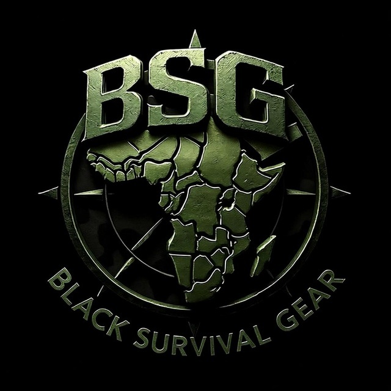

Preparedness is no longer optional. Across the modern world we are witnessing increasing geopolitical tension, economic instability, and expanding regional conflicts. In such an environment, access to reliable information and situational awareness becomes essential. History has shown that when systems fail — when borders close, currencies collapse, or violence erupts — the African diaspora is often the last to be protected and the first to be stranded. Black Survival Gear was built to change that reality. BSG Global Strategic Awareness OSINT is an open-source intelligence platform designed to monitor global developments in real time. By consolidating conflict monitoring, airspace activity, maritime tracking, cyber incidents, and environmental alerts, the system provides the awareness needed to make informed decisions and remain prepared. Information is the first layer of defence.